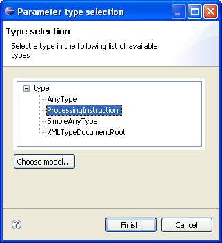
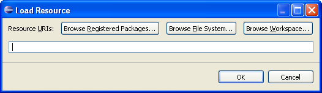

Specification Page
The specification page defines the pattern parameters and the applicable condition for pattern matching.
A pattern with parameters act as the following piece of code at runtime :
The All Parameters section
This is the list of ordered parameters.
The following actions are available :
- Add is adding a new parameter to the pattern with a default name and type.
- Remove is removing the selected parameter.
- Up is swapping currently selected parameter with the previous one (higher in the list).
- Down is swapping the currently selected parameter with the next one (lower in the list).
This order is used in the condition class implementation, and at runtime for computation of the current tuple.
Thus inverting the elements may result in different runtime execution speed, depending on the condition content.
The Parameter properties section
The parameter properties are accessible through a details section.
| Field |
Description |
Modifiable |
Default value |
| Name |
The parameter name. Used in the condition class and in the pattern templates.
This name should be unique in the whole pattern execution chain.
|
Yes |
newParameterXXX |
| Type |
The parameter type. Used in the condition class and in the pattern templates.
Each parameter can take a different type from a different metamodel, as long as it makes sense with the model
used when executing the pattern.
|
Yes, through the Browse... button |
EClass, from Ecore metamodel |
The following action is available :
-
Browse... is opening a new type selection window.

It is displaying the available types for currently selected model (by default, Ecore metamodel). One can change the selected model by pressing the Choose model...
button. The EMF default load resource window is then displayed.

Although this window allows the user to select a resource from the file system or from the workspace, the user should always browse registered packages.
Once Browse Registered Packages... is hit, the Package Selection window is displayed. The user can now select a new model based on its base package URI.
Back to the type selection window, the new available types are displayed.
The Edit condition class section
It is just made of a single link to the condition class.
By clicking this link, the corresponding Java class is opened for edition.
For synchronization purpose, the content of this class is recomputed if the parameters list has changed.
It is also recomputed each time a Save command happens for the current editor.
The Condition class current content section
It is a text component showing the currently known content of the condition class.
Since there is no Java edition feature attach to this widget, it might only be helpful in consultation mode (that is when the content can not be changed).
This mode is activated only for deployed factory components.

Pattern editor